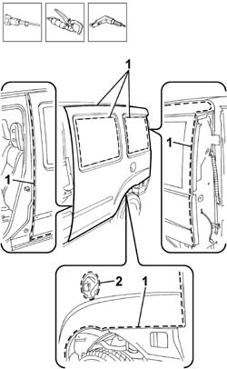
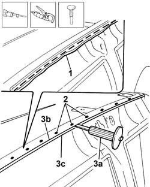
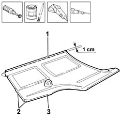
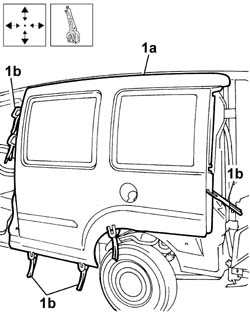
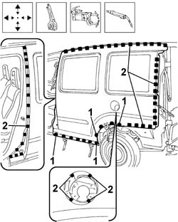

7210L56 R.R. REAR WING opposite sliding door
- Path
- Procedures > 72 PANELS AND FRAMES > 7210 REMOVING-REFITTING > 7210L specific parts for commercial vehicle > 7210L56 R.R. REAR WING opposite sliding door
- Kind
- repair procedure (removal / refitting; the operation number is the code)
- Applies to
- all engines; all production periods
- Interactive page
- https://sloeber94.github.io/elrnDB-fDbl/en/#/2585275
Applies to: all engines; all production periods
 Removing
Removing
 Refitting
RefittingCheck if any of the connected parts are deformed by checking body alignment dimensions. Use appropriate measurement tools (reference rigs, templates or gauges).
Straighten the body if necessary.
1. Use a pneumatic saw to cut along the cutting lines shown around the edge of the rear wing.
2. Cut around the edge of the fuel filler compartment.
Use a chamfering machine and drill to reduce weld spots around the edges of the trim and along the area of contact wtih the underlying frame.
Disconnect the trim from the underlying sealant positioned along the window compartment area.
3. Remove the rear wing

Applies to: all engines; all production periods
1. Use a pneumatic saw to trim the rear wing panels cut edges along the joint with the roof trim.
2. Use a chamfering machine to reduce the weld spots along the joint between the roof and underlying rear wing cut edge.
3. Use a suitable chisel (3a) to raise roof trim (3b) off wing trim cut edge (3c) so that the part can be positioned.

Applies to: all engines; all production periods
Straighten the edges of the panel.
Use a grinding wheel to remove the weld spot residues.
Remove sealant residues from along the window housing areas and underlying reinforcement bracket.
Apply electro-galvanizing paint to the parts which have been ground.
Applies to: all engines; all production periods
Refitting
Removing1. Trace a cutting line along the upper part of the replacement part and use a pneumatic saw to remove about 1 cm from the upper panel edge.
This operation is necessary to ensure the part can be fitted and welded with ease in the area of the joint with the roof without creating additional thickness if the cut edge is deliberately left.
2. Use a rotary brush to remove the corrosion-proofing around the edge of the parts.
3. Apply electro-galvanizing paint to the edges in contact with the vehicle.

Applies to: all engines; all production periods
Apply a new layer of sealant along the areas of contact with the window compartments and the underlying reinforcement bracket.
1. Correctly position the replacement part (1a) on the bodyshell and secure it using self-locking clamps (1b).
Check the part and cut edge are perfectly aligned and joined in the upper area of the joint with the roof.

Applies to: all engines; all production periods
1. Spot weld along the areas shown in the diagram.
2. Fill weld (rivet) the remaining areas of contact between part and body shown in the figure.

Applies to: all engines; all production periods
Level the spot welds using a grinding wheel and apply galvanised finish to the ground areas.
Check that the welded parts are correctly positioned.
Level the spot welds using a disc grinder.
Use a rotary brush to clean the inner parts.
Apply electro-galvanizing paint to the parts which have been ground.